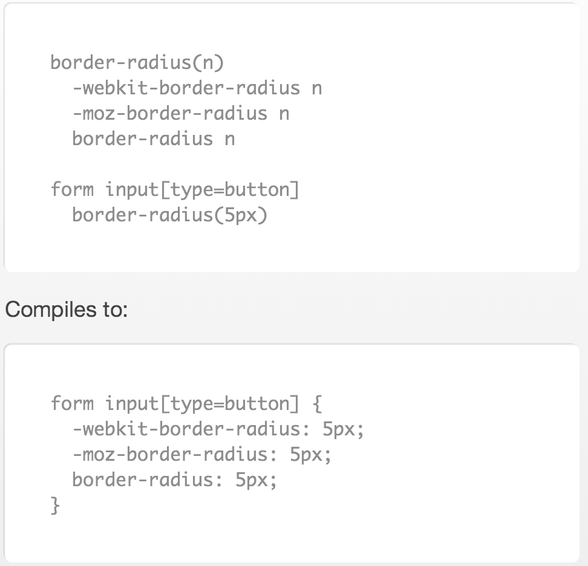

Continuous deployment of a Single Page Application on Azure
Part of dev team @ Booktrack
-
Konstantin Raev
-
Richard Sentino

Our front end stack
defeating complexity with abstractions
- Angular.js
- Typescript
- CSS Preprocessors
- Bower
Angular.js

Typescript
A superset of EcmaScript 6 with compile time type checking


Typescript + Angular

Stylus
Performance matters
 https://www.youtube.com/watch?v=7ubJzEi3HuA
https://www.youtube.com/watch?v=7ubJzEi3HuA
Bing experiment

Things we do to improve performance
- Use Content Delivery Network to server files from closest location
- Reduce download size of scripts, styles and images
- Bundle multiple files into one
- Eagerly download only content "above the fold"
- Use browser cache


Cache busted

How to do all this reliably?
funny image
Using JavaScript and Node.js as CLI tool
funny image
All Node build/integration tools are based on file matching configurations
main: {
src: ['app/**/*.ts', 'test/**/*.ts']
}
Problem?
Order of tasks execution
FUNNY IMAGE

Deployment steps
- Compile and minify stuff with Gulp
- Put it in the CLOUD
- ???
- PROFIT
Microsoft Azure has Node.js SDK

Checkout github.com/bestander/deploy-azure-cdn
Final point
- Organize your project with your favorite preprocessors
- Use Node.js CLI to build deployment artifacts
- Use Node.js to deploy to CDN
Continuous Delivery Pipeline
Team - Version Control - Build - Test (automate/manual) - Deployment (dev/production)
Team
User Experience
User Interface
Dev team (CTO / front-end / back-end / native mobile)
Dev Challenges and Opportunities
- Challenges:
-
- Need to support multiple platform/browser
- Managing shared libraries
- Code conflicts
- New product (spin-off)
Dev Challenges and Opportunities
- Opportunities:
-
- Speedy decision making
- Moving stuff around is quick
- New technologies are easy to adopt
Development Setup

Development Workflow
Cont. Improvement
pair programming (just started)
refactor early, refactor often, small stuff
Run builds on local machine

really ?

http://gulpjs.com/
Run builds on local machine
Compile TypeScript
Compile Stylus
Run tests
Best way to check changes ?
Working on multiple platforms and browsers

Chrome, Opera, Firefox
Best way to check changes ?

F5, ctrl + r, ⌘ + r
There must be a better way
LiveReload (tiny-lr)
- It will refresh the browser for you
- Apply CSS without reloading the page
- Suitable for build tools integration
Tiny-lr
package.json
"dependencies": {
"tiny-lr": "0.0.5"
}
index.html
...
<body>
</body>
</html>
gulp.js
1. var tinylr = require('tiny-lr');
2. gulp.task('dev', function(){
3. var lr = tinylr();
4. lr.listen(35729);
5. gulp.watch('/path/to/**/*.js', function(event){
6. lr.changed({
7. body: { files: [event.path] }
8. });
9. });
10. });LiveReload in Action
insert video
Testing

Testing
Sample Jasmine BDD code
1. it("should validate empty first name", () => {
2. var result:string[] = [];
3. var csvData: string = "first name, last name, password \n" +
4. ",Smith,somepassword";
5.
6. result = this.csvService.parse(csvData);
7.
8. expect(result.errors[0]).toEqual("There is some data missing in your
file for row(s) [1]. Update the file and upload again.");
9. expect(result.students.length).toEqual(0);
10. });Continuous Integration

CI w/ CodeShip

Setup in minutes
Importance of Automation
save time & money
develop more rapidly
reduce integration problems
Summary
OpenSource
Grab the example from Github
https://github.com/booktrack/continuous-delivery-talk